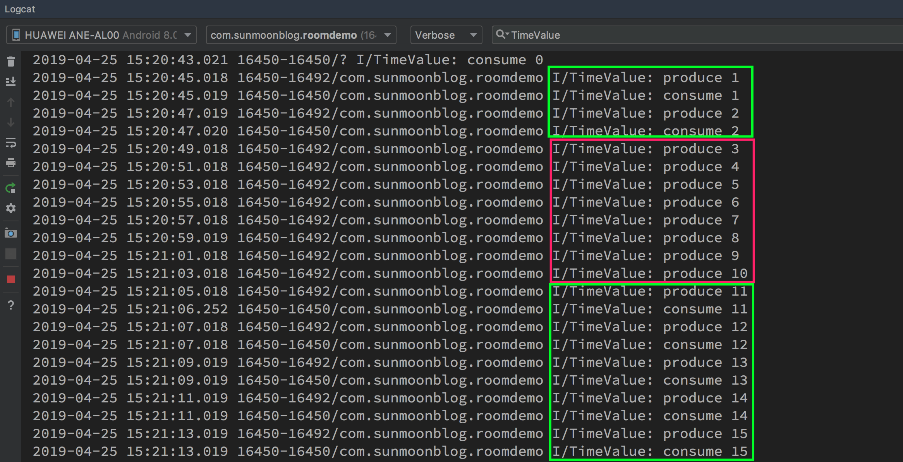

一篇关于 LiveData 的文章，简单明了。翻译一下当作学习。
文章翻译自 Android LiveData With Example 和 Android LiveData Transformation With Example。两篇都不是很长，所以翻译的内容放在一起。
相关源码见 Github。
今天要介绍几个解决方案。我认为每个项目中反复尝试去解决一类问题，而这些方案适用于这类问题。
比如，我响应在 Android Component 生命周期状态的变化(简单来说就是响应 onResume() 或 onPause() 之类的方法)。还有些时候你想配置变化后某些值的状态。我们经常面临这种问题，也尝试使用不同的架构来解决问题，比如 MVP，MVVM 或其他的。但对初级开发人员来说实现这些架构并不是个简单问题。
好消息是使用 Android Architecture Component，更准确地说是使用 LiveData 和 ViewModel，我们可以轻易地解决这些问题。
LiveData
LiveData 是可观察数据的持有者。它可感知组件的生命周期(lifecycle aware)。可感知组件生命周期的意思是，LiveData 仅仅在生命周期期间可被观察，更准确地说是在 Activity 和 Fragment 的生命周期中。通过 Activity 和 Fragment 的引用，LiveData 知道 UI 是处于 onScreen 状态还是 offScreen 状态或者是被销毁状态。将 UI 对象传给 LiveData，无论何时数据发生变化，它都会通知 lifecycle owner，并且让 UI 重绘。
LiveData 的优势
- 没有内存泄漏：Observers 跟 Lifecycle 绑定，当关联的对象销毁后 LiveData 也会被清理
- 不会让处于停止状态的 Activity 崩溃：即 Activity 在 back stack 中时，不会收到 LiveData 事件流
- 数据永远保持最新：一旦处于活跃状态时总能收到最新数据
- 不必手动处理组件生命周期：Observers 只需要专注于观察相关的数据，而不必操作是否要停止观察或开始观察。LiveData 底层会处理这些细节
- 保证 UI 跟数据同步：生命周期状态变化时 LiveData 会通知观察者。比起每次在数据变化后去更新 UI，观察者可以在有变更后主动更新 UI
- 正确处理 configuration 变化：当观察者由于 configuration 变化而重建时，比如屏幕旋转，它马上可以收到最新的可用数据
- 共享资源：可以继承 LiveData，并使用单例模式来包装 system service，以例在 app 内共享
添加 LiveData 库
1 | implementation "android.arch.lifecycle:extensions:$current_version" |
创建 LiveData
通常在 ViewModel 中创建 LiveData。接下来将使用前一篇文章中的例子， Color Changer app。首先使用一个 ViewModel 来持有当前背景色。

代码如下：
1 | class ColorChangerViewModel : ViewModel() { |
注意：是在 ViewModel 保存更新 UI 的 LiveData，而不是在 Activity 或 Fragment 中保存在 LiveData。ViewModel 和 LiveData 是 UI controller，它们负责持有数据而不是数据的状态。
MutableLiveData 也是 LiveData。MutableLiveData 在内部是继承 LiveData 的，它向外暴露两个方法 setValue() 和 getValue()。调用 setValue()，可以设置新的值，设置后将用新值调用所有的活跃 observers。getValue() 可以获取到保存在 LiveData 实例中的最新值。
为 LiveData 设置值的不同方法
有两种不同的方法来为 LiveData 设置新值。第一方法是 setValue)，另一种方法是 postValue)。setValue() 用于从主线程中为 LiveData 设置值。如果要从后台线程中设置值，使用 postValue()。
看看如何在 Activity 中使用 ViewModel：
1 | class MainActivity : AppCompatActivity() { |
多数时候在 onCreate() 中创建 ViewModel 即可。调用 LiveData.observe() 方法来观察数据。该方法的第一个参数是当前 UI，第二个参数是一个 Observer，其实也就是个回调。
当 setValue() 被调用后，onChanged() 立即被调用并获取到保存在 colorResource 中的最新值。
前面说过可以使用 setValue() 和 postValue() 来修改 LiveData 的值。在我们的例子中使用 setValue() 即可，因为是在主线程进行的。
再来看另一个例子更实际的例子。这个例子是一个计时器。计时器显示当前时间并且每2秒更新一次。

TimeChangerViewModel 的代码如下：
1 | class TimeChangerViewModel : ViewModel() { |
TimeChangerViewModel 初始化后启动计时器，每2秒更新一次。这里使用 RxJava2 来创建计时器。另外需要注意的是这里使用 postValue() 而不是 setValue()，因为 interval 方法是在 后台线程 中订阅的。
1 | class MainActivity : AppCompatActivity() { |
这个例子非常简单。将 Observer 设置到 LiveData 之后，如果 TimeChangerViewModel 中的 timerValue 发生变化，马上就会使用新的值调用 onChanged()。如果我们的 Activity 处于后台，LiveData 会暂停发送新的值。我是通过 logcat 打印日志来验证这一点的。
注意：当我们从 Observer 接收新的值时，是运行在主线程中的。尽管是从后台线程发送新的值，但底层会帮我们进行线程切换以方便开发者使用。
停止监听 LiveData
有时不需要继续监听 LiveData。这时可以移除指定的观察者。
1 | someViewModel.liveData.removeObservers(lifecycle : this) |
下一篇中我将讲讲这几个话题：
这篇文章中将讲讲关于 LiveData 的 Transformations。有时在将 LiveData 中的值分发给 Observer 前需要进行转换，有时在某些条件下你可能要返回一个不同的 LiveData。所以就有了 Transformations。
Transformations 介绍
Transformation 基本上就是对 LiveData 对象中持有的值应用一个 function，并且将得到的结果传给下游。有两种不同的 Transformation：
- Transformations.map) - map 允许对 LiveData 持有的值应用一个 function 并将结果传给下游
- Transformations.switchMap:) - swicthMap 跟 map 其实很类似，不过它而返回 LiveData 本身而不是 LiveData 持有的值。同样，swicthMap 向下游传递 LiveData 而不是值。
Transformations.map 示例
看这样一个场景：用户向数据库中添加一个新用户后展示一个 Snackbar。Snackbar 上显示用户名。

直接看代码。这段代码中，ViewModel 持有含有 User 的 LiveData：
1 | class TransformationViewModel : ViewModel() { |
有两点要注意：
- 首先，并没有向外公开持有 User 的 LiveData。只有一个公开的
addNewUser()方法用于添加用户。这样做可以保持不变性。(By doing this we’re keeping our Immutability principle) - 其次，为了添加 map transformation 操作，我们需要提供原始的 LiveData 以及一个用于转换的 function (你从这个 function 返回自定义的值)。在本例中是返回用户名
再来看看如何在 Activity 中使用 ViewModel 和 LiveData：
1 | class MainActivity : AppCompatActivity() { |
这个 Activity 非常简单。我们只观察 LiveData 实例。向数据库添加用户时，会自动调用 onChanged() 方法并得到用户名。
Transformations.switchMap 示例
再看另一个场景：根据名字查询用户，并且在 RecyclerView 中展示查询结果。

代码如下：
1 | class UserRepo{ |
代码中 ViewModel 从 UserRepo 类获取数据。所以当查询某个名字的时候，repo 会创建一个新的 LiveData 实例(持有 List
为了能讲清楚 map() 和 swicthMap() 的区别。以上代码我使用的是 map()，这会引起一个问题。
先查询用户名的是 Alice。 repo 创建了持有 List
解决方案是实现一个机制，当我们观察新的数据时能自动停止观察前一个数据。 使用 swicthMap() 代替 map() 即可达到这种效果。在底层，switchMap) 使用 MediatorLiveData，当开始观察新的数据时它会自动取消前一个数据。简而言之，它提供一个自动取消前一个 Observer 的机制。
修改后的代码如下：
1 | class UserRepo{ |
在 MainActivity 中使用 ViewModel：
1 | class MainActivity : AppCompatActivity() { |
这个 Activity 很简单。先是为 RecyclerView 设置属性，当用户点击按钮时根据输入的用户名调用 ViewModel 类的方法来查找用户。最后，只用简单地监听来自 ViewModel 的 LiveData 即可。
问题验证
从上面两个文章中可以学习到 LiveData 的基本用法。不过对以下两个问题还是有些疑问：
- Activity 或 Fragment 处于后台时，LiveData 的观察者是否仍然会收到事件
- 文中提到
map()与swicthMap()差异讲得不是太清，似乎也不可信
问题一
第一个问题比较容易验证。我改写了一下代码，观察 Activity 在前台和后台 logcat 日志的区别。
1 | class Main : AppCompatActivity() { |
跟原来代码的主要区别：
- 为了容易观察，不是输出当前时间到日志，而是直接输出一个整数
- TimeChangerViewModel 负责生产整数，Main 负责消费整数，为了容易观察，生产者和消费者均输出日志
这是输出的日志：

- 绿框阶段，Main Activity 处于前台，这时 TimeChangerViewModel 负责生产，Main 负责消费
- 红框阶段，Main Activity 处于后台，这时 TimeChangerViewModel 继续生产，但 Main 不消费了。由于 LiveData 只能持有一个值，所以以前生产的整数都被覆盖了。
如果我们想让 Main Activity 处于后台时也能继续消费 TimeChangerViewModel 生产的整数该怎么办呢？这时就要使用 observeForever() 方法来代替 observe()：
1 | class Main : AppCompatActivity() { |
observeForever() 和 observe() 有两个明显不同：
- 首先从名字可以大概猜测出来前者是 永远 观测，不会主动感知组件的生命周期
- 第二，既然不关心组件生命周期，所以前者没有 lifecycleOwner 参数
- 最后，通过
observeForever()注册的观察者，要记得手动移除！
问题二
- What is the difference between map() and switchMap() methods?
- map() applies a function on the value stored in the LiveData object, and propagates the result downstream.
- swicthMap() applies a function to the value stored in the LiveData object and unwraps and dispatches the result downstream. The function passed to switchMap() must return a LiveData object.
- Transformations 官方文档
可以不同的层面来理解二者的差异。
- 在
map()场景中被传进来的 LiveData 扮演 source 的角色 - 在
swicthMap()场景中被传进来的 LiveData 扮演 trigger 的角色。